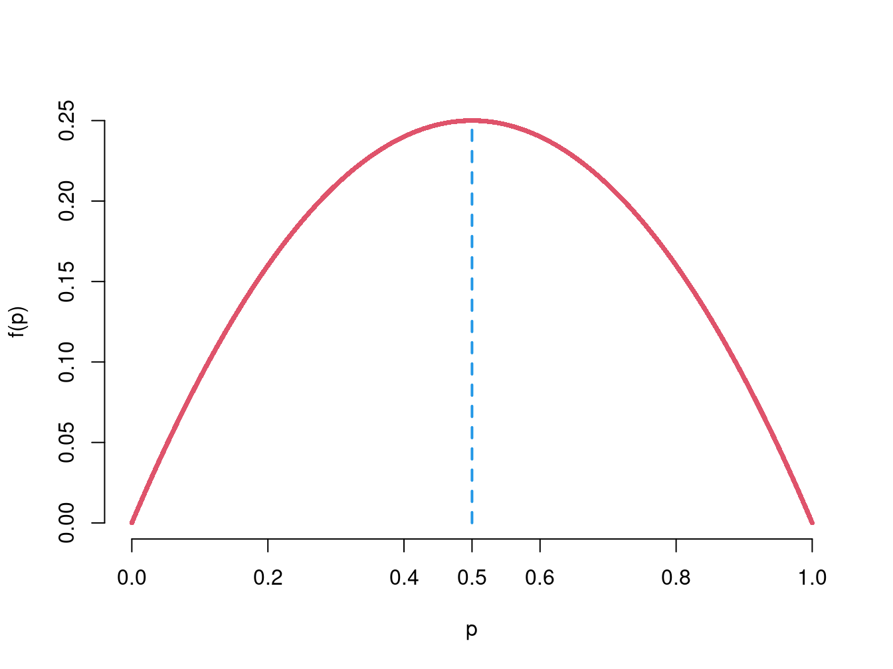

Chapter 5 Parameterschätzung
Um die Frage zu den Rückschlüßen auf die Grundgesamtheit hinsichtlich Parameterschätzung zu beantworten, schauen wir uns ganz genau Verteilungen von Schätzern wie \(\bar X\) an, um einige Kriterien von “guten” Schätzern zu definieren und die Unsicherheit der Schätzung zu quantifizieren.
In diesem Kapitel werden wir lernen:
- Welche Eigenschaften sollen wir von den Schätzern, die wir benutzen, fordern,
- welche Punktschätzer für welche Parameter geeignet sind und
- wie man Bedarf maßgeschneiderte Schätzfunktionen konstruieren kann (👽), bzw.
- wie man die Unsicherheit der Schätzung in dem Schätzverfahren berücksichtigt \(\leadsto\) Intervallschätzung.
5.1 Grundideen der Induktiven Statistik
5.1.1 Parameterschätzung theoretisch
Problemstellung
Sie wollen Ihre Kundschaft auf bestimmte Bevölkerungsgruppe erweitern und interessieren sich:
zu welchem Anteil werden die neuen Kunden die App nutzen (\(Y\)), konkret: was wäre der Anteil von App-Nutzer in Ihrer neuen Kundschaft (\(p\)),
mit welchem durchschnittlichen Umsatz/ Rechnungsbetrag dürfen Sie bei den neuen Kunden rechnen (\(X\)), konkret: was wäre der mittlere Rechnungsbetrag Ihrer neuen Kunden (\(\mathbb E(X)=\mathbb \mu_X\)).
\(X\) und \(Y\) sind Zufallsvariablen. Wir interessieren uns für die Kennzahlen/ Verteilungsparameter dieser Zufallsvariablen. Zudem, vom Vorstand wird eine gewisse Schätzpräzision verlangt…
Modellierung der Größen von Interesse
- Appnutzung ist die Eigenschaft von Interesse, also:
\[ Y=\begin{cases}1,\text{wenn Appnutzung},\\0,\text{wenn keine Appnutzung}.\end{cases} \] \(Y\sim Ber(p)\). Von Interesse ist der Anteil von App-Nutzer (\(p\)).
- Rechnungsbetrag ist die Größe \(X\) und der mittlere Rechnungsbetrag ist von Interesse: \(\mathbb E(X)=\mu_x\).
Zufallsstichprobe
Geplannt ist \(n\) Kunden zufällig auszuwählen und zu befragen.
- App-Nutzung:
Die Stichprobenvariablen zu \(Y\) sind: \(\color{blue}{Y_1, Y_2,\ldots,Y_n},\) wobei \(Y_i\) den Wert 1 oder 0 annimt, je nach dem, ob die \(i\)-te ausgewählte Person die App nutzt oder nicht. Der Wert von \(Y_i\) ist also zunächst unbekannt, da wir nicht wissen, welche Person an \(i\)-ter Stelle befragt wird.
\(\leadsto\) \(Y_1,\ldots, Y_n\) sind Zufallsvariablen!
- Rechnungsbetrag: Die Stichprobenvariablen zu \(X\) sind: \({\color{red}X_1, X_2,\ldots,X_n},\) wobei \(X_i\) die Einschätzung der Rechnungshöhe der \(i\)-ten ausgewählten Person darstellt. Der Wert von \(X_i\) ist also zunächst unbekannt, da wir nicht wissen, welche Person an \(i\)-ter Stelle befragt wird.
\(\leadsto\) \(X_1,\ldots, X_n\) sind Zufallsvariablen!
Schätzfunktionen
Berechnungslogik (Schätzfunktion) für die Schätzung:
des Appnutzeranteils \(p\): \[\begin{align} \color{blue}{\overline{Y}}&\color{blue}{=\frac 1n (Y_1 + Y_2 + \ldots Y_n)} \leadsto\color{blue}{\frac{\text{Anzahl von Einsen(=Appnutzung)}}{\text{Anzahl Werte}}}\\ &\color{blue}{= \text{Stichprobenhäufigkeit von Einsen (=Appnutzung)}} \end{align}\]
des mittleren Rechnungsbetrages (\(\mathbb E(X)\)): \(\color{red}{\overline{X}=\frac 1n (X_1 + X_2 + \ldots X_n) \leadsto\text{Stichprobenmittel}}\)
\(\overline{Y}\) und \(\overline{X}\) sind Funktionen der Stichprobenvariablen, also sind sie selber Zufallsvariablen.
5.1.2 Parameterschätzung praktisch
Problemlösung
Wir müssen den Stichprobenumfang (\(n\)) festlegen und dann eine Umfrage durchführen, um konkrete Stichprobenwerte (\(x_i\) und \(y_i\) für \(i=1,\ldots,n\)) zu erhalten.
In der Animation kann man nachvollziehen, was bei einer Stichprobenziehung passiert:
Zurück zu unserem Schätzproblem:
5.1.3 Zufallsstichprobe
Wir haben schon oft über eine Stichprobe gesprochen und gesehen, wie eine Stichprobenziehung modelliert werden kann (Siehe “Modell vom Zufall” ). Nun definieren wir formal, was wir unter einer Zufallsstichprobe als Zufallsvorgang verstehen.
Für \(X_1,\ldots, X_n\) Zufallsvariablen einer Stichprobe zu \(X\) heißt \((X_1,\ldots, X_n)\) eine Zufallsstichprobe vom Umfang \(n\) (Stichprobenvariablen) zu \(X\), falls die Verteilungen von \(X\) und \(X_i\), \(i=1,2,\ldots, n\), übereinstimmen und \(X_1,\ldots, X_n\) stochastisch unabhängig sind.
Die beobachteten Realisationen \((x_1,\ldots, x_n)\) der Zufallsvariablen \((X_1,\ldots, X_n)\) heißen Stichprobenrealisation. Die Menge \(\mathcal X\) aller möglichen Stichprobenrealisationen heißt Stichprobenraum:\(\mathcal X\subseteq\mathbb R^n\).
Exercise 5.1 (Grundideen von Parameterschätzung) Versuche den Stichprobenumfang in dem obigen Fenster zu verändern und beobachte die Ergebnisse.
Welche Auswirkungen fallen dir auf?
5.2 Punktschätzung
Ziel der Punktschätzung ist es, einen möglichst genauen Näherungswert für einen unbekannten Grundgesamtheitsparameter anzugeben.
Parameter treten in zwei Formen auf:
Kennzahlen einer beliebigen, unbekannten Verteilung (\(\leadsto \mathbb E(\cdot), \text{Var}(\cdot), \rho, q_p,\ldots\))
Parameter eines angenommenen Verteilungsmodells (\(\leadsto p \text{ der Bernoulli-Verteilung }, \lambda \text{ der Poisson-Verteilung },\ldots\)).
Für beide Typen der Parameter existieren Schätzfunktionen (Formeln), die eine Punktschätzung liefern. Im Fall eines Verteilungsmodells können solche Schätzfunktionen konstruiert werden.
Angenommen, aus den Realisierungen in der Stichprobe soll auf einen Parameter \(\theta\) geschlossen werden (z.B. Kennzahl oder Verteilungsparameter).
Eine Punktschätzung für \(\theta\) ist eine Funktion der Realisierungen der Form \(t=g(x_1,\ldots, x_n)\). Zum Beispiel, \(g(x_1,\ldots, x_n)=\displaystyle \frac{1}{n}\sum_i x_i\) ist Schätzwert für Erwartungswert \(\theta=\mathbb E X\).
5.2.1 Schätzfunktionen
Für eine Zufallsstichprobe \((X_1,\ldots, X_n)\) ist eine Funktion: \[\begin{equation*} T=g(X_1,\ldots, X_n) \end{equation*}\] der Zufallsstichprobe \((X_1,\ldots, X_n)\) eine Schätzfunktion.
Der resultierende numerische Wert \(g(x_1,\ldots, x_n)\) heißt Schätzwert. Als Funktion von Zufallsvariablen ist \(T\) selbst eine Zufallsvariable.
Die Schätzfunktion heißt:
- Schätzfunktion oder Schätzer, falls es sich um die Schätzung eines Verteilungsparameters oder einer Kennzahl handelt;
- Teststatistik, falls Entscheidungen zur Annahme oder Ablehnung von Hypothesen getroffen werden (später mehr dazu).
Example 4.1 (Beispiele für Schätzfunktionen) Folgende Schätzfunktionen kennen wir bereits ganz gut:
\(\displaystyle\overline X = \frac{1}{n} \sum_{i=1}^n X_i\) ist Schätzfunktion für Erwartungswert \(\mu=\mathbb E (X)\).
\(\displaystyle \overline X = \frac{1}{n} \sum_{i=1}^n X_i\), mit \(X_i\in \{0;1\}\) ist Schätzfunktion für die Auftretenswahrscheinlichkeit \(\mathbb P(X=1)\).
\(\hat\sigma_X^2=\displaystyle S_X^2 = g(X_1,\ldots, X_n) = \frac{1}{n-1}\sum_{i=1}^n (X_i-\overline X)^2\) ist Schätzfunktion für die Varianz \(\sigma_X^2=\text{Var}(X)\).
5.2.2 Eigenschaften von Schätzfunktionen
Was charakterisiert einen “guten” Schätzer?
Welche Eigenschaften rechtfertigen beispielsweise die Schätzfunktion \(\overline X\) als Schätzer für den Erwartungswert?
Die folgenden Eigenschaften liefern klare Kriterien für die Güte einer Schätzfunktion:
- Erwartungstreue
- Konsistenz
- Effizienz
5.2.2.1 Erwartungstreue
Eine Schätzung soll tendenziell den richtigen Wert liefern, d.h. weder systematisch über- noch unterschätzen. Eine Schätzfunktion \(T=g(X_1,\ldots, X_n)\) für den Parameter \(\theta\) heißt erwartungstreu oder unverzerrt, wenn gilt \[\begin{equation*} \mathbb E(T) = \theta. \end{equation*}\]
Die Verzerrung / der Bias bezeichnet die systematische Über- oder Unterschätzung einer Schätzfunktion: \[\begin{equation*} \text{Bias}(T) = \mathbb E(T) - \theta. \end{equation*}\]
Example 4.2 (Erwartungstreue von Stichprobenmittel) Wir prüfen ob der Stichprobenmittel \(\bar X\) erwartungstreu für \(\mathbb E(X)\) und die relative Häufigkeit (\(h_{Y=1}=\bar Y\), \(Y\in\{0;1\}\)) erwartungstreu für \(\mathbb P(Y=1)\) sind.
\(\overline X=\displaystyle \frac{1}{n} \sum_{i=1}^n X_i\) ist eine erwartungstreue Schätzstatistik für den Erwartungswert \(\mu=\mathbb E(X)\), denn \[\begin{equation*} \mathbb E(\overline X) = \frac{1}{n} \sum_{i=1}^n \mathbb E(X_i) = \frac{1}{n} n\cdot \mu = \mu. \end{equation*}\]
Die relative Häufigkeit \(H_{Y=1}=\displaystyle \overline Y=\displaystyle\frac{1}{n}\sum_{i=1}^n Y_i\), mit \(Y_i\in \{0,1\}\), ist erwartungstreuer Schätzer für den Anteilswert/ die Auftretenswahrscheinlichkeit \(\mathbb P(Y=1)\). \[\begin{equation*} \mathbb E(\overline Y) = \frac{1}{n} \sum_{i=1}^n \mathbb E(Y_i) = \frac{1}{n} \sum_{i=1}^n \mathbb P(Y_i=1)\frac{1}{n} n\cdot \mathbb P(Y=1) = \mathbb P(Y=1). \end{equation*}\]
Wenn wir nun mehrere Stichprobenziehungen (z.B. \(100\)) vornehmen und für jede Ziehung mit bestimmten Umfang \(n\) den Stichprobenmittelwert berechnen, dann beobachten wir folgendes:
Example 4.3 (Stichprobenvarianz und mittlere qaudratische Abweichung) Was ist mit den Schätzfunktionen für die Varianz?
Stichprobenvarianz: \[\begin{equation*} S^2 = \frac{1}{n-1} \sum_{i=1}^n (X_i-\overline X)^2 \end{equation*}\] ist eine erwartungstreue Schätzfunktion für die Varianz \(\sigma^2=\text{Var}(X)\), d.h. \(\mathbb E(S^2) = \sigma^2\).
Für die mittlere quadratische Abweichung \(\displaystyle \tilde S^2 = \frac{1}{n}\sum_{i=1}^n (X_i-\overline X)^2\) gilt: \[\begin{equation*} \mathbb E(\tilde S^2) = \frac{n-1}{n} \sigma^2. \end{equation*}\] Also: \(\tilde S^2\) nicht erwartungstreu (sie ist asymptotisch erwartungstreu, da die Verzerrung verschwindet für wachsendes \(n\)). Die Verzerrung ist \[\begin{equation*} \text{Bias}(\tilde S^2) = \mathbb E(\tilde S^2) - \sigma^2 = -\frac{1}{n}\sigma^2. \end{equation*}\]
Nachweis: Bias der mittleren quadratischen Abweichung 👽
- Es gilt: \(\displaystyle \mathbb E((X_i-\mu)(X_j-\mu))=0\), falls \(i\not=j\).
- Ferner: \[\begin{equation*} \mathbb E((\overline X-\mu)^2) = \text{Var}(\overline X) = \frac{1}{n^2} \text{Var}(X_1+\cdots+X_n) = \frac{1}{n}\sigma^2. \end{equation*}\] Damit ergibt sich: \[\begin{align*} \mathbb E((X_i-\overline X)^2) &= \mathbb E(((X_i-\mu) - (\overline X-\mu))^2) \\ &= \sigma^2 -2 \mathbb E\left((X_i-\mu) \left(\frac{1}{n} \sum_{j=1}^n X_j-\mu\right)\right) + \frac{\sigma^2}{n} \\ &= \sigma^2 - \frac{2}{n} \sum_{i=1}^n \mathbb E((X_i-\mu)(X_j-\mu)) + \frac{\sigma^2}{n} \\ &= \sigma^2 - \frac{2\sigma^2}{n} + \frac{\sigma^2}{n} = \sigma^2 - \frac{\sigma^2}{n}. \end{align*}\]
- Wenn wir nun mehrere Stichprobenziehungen (z.B. \(100\)) vornehmen und für jede Ziehung mit bestimmten Umfang \(n\) die Stichprobenvarianz und die mittlere quadratische Abweichung berechnen, dann beobachten wir folgendes:
5.2.2.2 Konsistenz
Eine weitere wichtige Eigenschaft eines Schätzers ist die Konsistenz, die besagt, dass die Schätzfunktion gegen die zu schätzende Größe konvergiert. DIese Definition berücksichtigt die Varianz und die Verzerrung des Schätzers, die beiden Gößen sollen mit zunehmendem Stuchprobeumfang \(n\) gegen Null gehen.
Formal wird Konsistenz über die Konvergenz der erwarteten mittleren quadratischen Abweichung definiert. Die erwartete mittlere quadratische Abweichung (mean squareerror) ist bestimmt durch \[\begin{equation*} \text{MSE}(T)= \mathbb E((T-\theta)^2). \end{equation*}\]
Sie lässt sich ausdrücken als \[\begin{equation*} \text{MSE}(T) = \text{Var}(T) + \text{Bias}(T)^2. \end{equation*}\]
Eine Schätzfunktion heißt konsistent, wenn gilt: \[\begin{equation*} \text{MSE} \rightarrow 0\text{ für } n\rightarrow\infty. \end{equation*}\]
Example 4.4 (Konsistenz des Stichprobenmittels) Aus unabhängigen, identisch verteilten Beobachtungen \(X_1,\ldots, X_n\) mit \(\mathbb E(X_1)=\mu\) und \(\text{Var}(X_1)=\sigma^2\) wird der Erwartungswert durch \(\overline X=\displaystyle\frac{1}{n} \sum_{i=1}^n X_i\) geschätzt.
\(\mathbb E(\overline X)=\mu\) (Siehe Erwartungstreue von \(\bar X\))
\(\text{Var}(\overline X) =\displaystyle\frac{1}{n^2}\sum_{i=1}^n \sigma^2 =\frac{\sigma^2}{n}\) (\(\leadsto\) Konsistenz)
5.2.2.3 Effizienz
Ein unverzerrter Schätzer für \(\theta\) ist effizienter als ein anderer unverzerrter Schätzer, wenn er die kleinere Varianz hat.
Effizienz bedeutet, dass von zwei erwartungstreuen Schätzern \(T_1\) und \(T_2\) für \(\theta\) einer (hier \(T_1\)) ist effizienter wenn: \[\begin{equation*} \text{Var}(T_1)\leq \text{Var}(T_2) \end{equation*}\]
Der effizienteste oder beste Schätzer ist derjenige unverzerrte Schätzer, der die kleinste Varianz hat.
- \(\overline X\) ist effizient für den Erwartungswert;
- \(\overline X\), mit \(X_i\in\{0,1\}\) ist effizient für \(\mathbb P(X=1)\);
- \(\overline X\) ist effizient für den Parameter \(\lambda\) der Poisson-Verteilung.
5.3 Konstruktion von Schätzfunktionen 👽
Für die wichtigsten Kennzahlen von Verteilungen (Erwartungswert und Varianz) haben wir also gute Schätzer bereits. Was tun aber, wenn wir unbekannte Parameter eines Verteilungsmodells schätzen wollen? Nicht immer kann man sich eine geeignete Schätzfunktion “ergoogeln”.
Es gibt zwei populäre Methoden, die Schätzfunktionen für die unbekannten Parameter eines Verteilungsmodells zu konstruieren.
5.3.1 Momenten Methode
Grundlegende Idee: Schätze Parameter der Verteilung so, dass die zugehörige Momente der Verteilung \(\mathbb E(X), \mathbb E(X^2), \ldots\) mit den entsprechenden empirischen Momenten der Stichprobe \(\bar X, \overline{X^2}, \ldots\) übereinstimmen:
\[ \begin{array}{lp{.5cm}l} \hline \text{Verteilung} & & \text{Stichprobe}\\\hline \mathbb E(X)=\mu && \displaystyle \overline x=\frac{1}{n}\sum_{i=1}^n x_i\\ \mathbb E(X^2) = \mu^2 + \sigma^2 & & \displaystyle \overline{x^2}=\frac{1}{n}\sum_{i=1}^n x_i^2\\ \vdots & & \vdots\\ \mathbb E(X^m) & & \displaystyle \overline{x^m}=\frac{1}{n} \sum_{i=1}^n x_i^m\\\hline \end{array} \]
Es werden dabei – beginnend mit dem ersten Moment – gerade so viele Momente einbezogen, dass alle zu schätzenden Parameter eindeutig geschätzt werden können.
Example 4.5 (Bernoulli-Verteilung) Schätzung des Parameters \(p\) einer Bernoulli-Verteilung.
Theoretisch:
- Verteilungsannahme: \(\mathbb P\in\{B(1,p) | p\in \Theta=[0,1]\}\)
- Erstes Moment der Verteilung: \(\mathbb E(X) = p\)
- Erstes Moment der Stichprobe: \(\bar X = \frac 1n \sum_{i=1}^n X_i\)
- Schätzer: \(\hat p = \overline X\) (Anteil der “Erfolge” in der Stichprobe)
Praktisch: Schätzung des Appnutzeranteils anhand einer Kundenbefragung.
- Aus der Stichprobe: \(\bar x = 0,55\)
- Schätzwert: \(\hat p=0,55\)
Example 4.6 (Exponentialverteilung) Schätzung des Parameters \(\lambda\) einer Exponentialverteilung.
Theoretisch:
- Verteilungsannahme: \(\mathbb P\in\{E(\lambda)| \lambda>0\}\)
- Erstes Moment der Verteilung: \(\mathbb E(X) = \displaystyle\frac{1}{\lambda}\)
- Erstes Moment der Stichprobe: \(\bar X = \frac 1n \sum_{i=1}^n X_i\)
- Schätzer: \(\hat\lambda = \displaystyle\frac{1}{\overline X}\) (denn dann: \(\overline X = \displaystyle \mathbb E(X) = \frac{1}{\lambda}\))
Praktisch: Schätzung der \(\lambda\) für die Transaktionsdauer.
- Aus der Stichprobe: \(\bar x = 9,5\)
- Schätzwert: \(\hat \lambda=\frac1{9,5}=0,1053.\)
Example 4.7 (Normalverteilung) Schätzung der Parameter \((\mu,\sigma^2)\) einer Normalverteilung.
Theoretisch:
- Verteilungsannahme: \(\mathbb P\in\{N(\mu,\sigma^2)|\mu\in \mathbb R, \sigma^2>0\}\)
- Erstes Moment der Verteilung: \(\mathbb E(X) = \mu\)
- Erstes Moment der Stichprobe: \(\bar X = \frac 1n \sum_{i=1}^n X_i\)
- Zweites Moment der Verteilung: \(\mathbb E(X^2) = \mu^2 + \sigma^2\)
- Zweites Moment der Stichprobe: \(\overline{X^2} = \frac 1n \sum_{i=1}^n X^2_i\)
- Einsetzen der empirischen Momente gibt: \(\hat\mu=\overline X\) und \(\hat\sigma^2 = \tilde S^2\)
Praktisch: Verteilungsparameter für die durchschnittliche Temperatur im Juli.
- Aus der Stichprobe: \(\bar t = 20,5\); \(\tilde s_T^2 = 12\)
- Schätzwert: \(\hat \mu_T=20,5\); \(\hat\sigma_T^2=12\).
Exercise 5.2 (Momenten-Methode)
5.3.2 Maximum-Likelihood Methode
Seien \(X_1,\ldots, X_n\) unabhängige, identisch verteilte Zufallsvariablen. Die Verteilung der \(X_i\), \(i=1,\ldots, n\) ist unbekannt, aber wir nehmen an, die Verteilung gehöre zu einem Verteilungsmodell, die durch eine geeignete Parametrisierung \(\theta\) charakterisiert ist.
D.h. \(X_i\) hat Wahrscheinlichkeitsfunktion oder Dichte \(f(x|\theta)\), \(\theta\in\Theta\), wobei \(\theta\) ein Vektor von Parametern aus der Menge \(\Theta\) ist.
Das Maximum-Likelihood-Prinzip besagt:
Man wähle zum Stichprobenergebnis \((x_1,\ldots, x_n)\) denjenigen Wert \(\hat\theta\) als Schätzwert für \(\theta\), unter dem die Wahrscheinlichkeit für das Eintreten des Stichprobenergebnisses am größten ist.
Den Satzteil “unter dem die Wahrscheinlichkeit für das Eintreten des Ergebnisses am größten ist” kann ersetzt werden durch: “unter dem die entsprechende Wahrscheinlichkeitsfunktion oder Dichte maximal ist”. Letzteres wird mittles Likelihood-Funktions quantifiziert:
Ist eine Realisierung \((x_1,\ldots, x_n)\) gegeben, so lässt sich die Dichte als Funktion der unbekannten Parameter \(\theta\) auffassen \[\begin{equation*} L(\theta)= f(x_1,\ldots, x_n|\theta). \end{equation*}\]
Wegen der Unabhängigkeit der Zufallsstichprobe gilt für die gemeinsame Wahrscheinlichkeitsfunktion / Dichte: \[\begin{equation*} L(\theta)=f(x_1,\ldots, x_n|\theta) = f(x_1|\theta)\cdot f(x_2|\theta)\cdot \dots \cdot f(x_n|\theta). \end{equation*}\]
Das Maximum Likelihood-Prinzip besagt: Wähle zu \(x_1,\ldots, x_n\) als Parameterschätzung denjenigen Parameter \(\hat\theta\), für den die Likelihood maximal* ist, d.h. \[\begin{equation*} L(\hat\theta)=\max_{\theta} L(\theta), \end{equation*}\] bzw. \[\begin{equation*} f(x_1,\ldots, x_n|\hat\theta) = \max_{\theta} f(x_1,\ldots, x_n|\theta). \end{equation*}\]
Man wählt zu den gegebenen Realisationen \(x_1,\ldots, x_n\) denjenigen Parameter \(\hat\theta\), für den die Wahrscheinlichkeit bzw. die Dichte, dass gerade diese Werte auftreten, maximal ist. Es handelt sich um diejenigen Parameter \(\theta\), die die plausibelste Erklärung für das Zustandekommen dieser Werte liefern. Die Schätzung hängt insbesondere von der Stichprobe ab: \(\hat\theta=\hat\theta(x_1,\ldots, x_n)\).
Die Schätzfunktion \(g(x_1,\ldots, x_n)=\hat\theta(x_1,\ldots, x_n)\) heißt Maximum-Likelihood-Schätzer (ML-Schätzer).
Zur praktischen Bestimmung des Maximums wählt man häufig den Logarithmus der Likelihood-Funktion, die Log-Likelihood da diese das Produkt der Dichten in eine Summe überführt: \[\begin{equation*} \mathcal L(\theta) = \ln L(\theta) = \sum_{i=1}^n \ln f(x_i|\theta). \end{equation*}\] Wegen der strengen Monotonie des Logarithmus liefern das Maximieren von \(L(\theta)\) und \(\ln L(\theta)\) denselben Wert \(\hat\theta\).
Example 4.8 (ML: Bernoulli-Verteilung) Wähle zufällig \(n=4\) Kunden aus einem Kunden-Pool mit \(a\) App-Nutzern und \(w\) Web-Nutzern (mit Zurücklegen); \(p=\displaystyle\frac{a}{a+w}\) unbekannt.
Konstruktion:
- Also: \(4\) unabhängige Wiederholungen des Bernoulli-Zufallsvorgangs.
- Die Stichprobe ist \(x_1=1\), \(x_2=1\), \(x_3=0\), \(x_4=1\):
- Likelihood-Funktion: \[\begin{equation*} L(p) = f(x_1|p) \cdots f(x_4|p) = \prod_{i=1}^4 p^{x_i}(1-p)^{1-x_i} = p\cdot p\cdot (1-p)\cdot p = p^3\cdot (1-p). \end{equation*}\]
- Ableiten und Nullsetzen ergibt: \[\begin{equation*} L'(p) = 3p^2 (1-p) - p^3 = (3-4p)p^2 = 0 \iff p\in \left\{0,\frac{3}{4}\right\}. \end{equation*}\]
- Maximum bei \(p^\ast=3/4\) (negative zweite Ableitung).
Darstellung der Likelihood-Funktion:
- Interpretation der Likelihood-Funktion: \(L(p)\) ist die Wahrscheinlichkeit für das gemeinsame Auftreten der Beobachtungen \(x_1=1,x_2=1, x_3=0\) und \(x_4=1\) unter der Annahme das \(\mathbb P(X=1)=p\).
Example 4.9 (ML: Exponentialverteilung) Seien \(X_1,\ldots, X_4\) unabhängige Wiederholungen einer exponentell-verteilten Größe mit zu schätzendem Wert \(\lambda\).
Konstruktion:
- Stichprobe: \(x_1=0,95\), \(x_2=1,81\), \(x_3=1\), \(x_4=0,67\)
- Likelihood-Funktion: \[\begin{equation*} L(\lambda) = f(x_1|\lambda)\cdots f(x_4|\lambda) = \prod_{i=1}^4 \lambda \text e^{-\lambda x_i} = \lambda^4 \text e^{-\lambda (x_1+\cdots + x_4)} = \lambda^4 \text e^{-4,43\lambda} \end{equation*}\]
- Log-Likelihood-Funktion: \(\displaystyle \mathcal{L}(\lambda) = \ln L(\lambda) = -4,43\lambda + 4 \ln(\lambda)\)
- Ableiten und Nullsetzen: \[\begin{equation*} \mathcal{L}^\prime(\lambda) = -4,43 + \frac{4}{\lambda} = 0 \quad \iff \quad \lambda=4/4,43 = 0,9029 \end{equation*}\]
- Zweite Ableitung: \(\displaystyle -\frac{4}{\lambda^2}<0\), also Maximum.
- \(\hat\lambda=1/\overline X = 1/1,1075=0,902935\).
Darstellung der Likelihood-Funktion und log-Likelihood-Funktions:
Interpretation der Likelihood-Funktion: \(L(\lambda)\) ist die Dichte für das gemeinsame Auftreten der Beobachtungen \(x_1=0,95\), \(x_2=1,81\), \(x_3=1\) und \(x_4=0,67\) unter der Annahme, dass eine Exponentialverteilung mit Parameter \(\lambda\) vorliegt.
Ein hoher Dichtewert \(f(x)\) an der Stelle \(x\) impliziert eine hohe Auftretenswahrscheinlichkeit in einem kleinen Intervall um \(x\).
Exercise 5.3 (Maximum-Likelihood-Methode)
5.4 Intervallschätzung
Die Punkschätzung liefert einen Parameterschätzwert \(\hat\theta\), der typischerweise nicht mit dem wahren Wert \(\theta\) identisch ist. Zusätzlich zum Schätzwert \(\hat\theta\) selbst kann man die Präzision des Schätzers angeben, in dem man die Variabilität des Schätzers berücksichtigt.
Die Intervallschätzung ist Weg, die Genauigkeit des Schätzverfahrens direkt einzubeziehen. Das Ergebnis des Schätzens ist ein Intervall. Dennoch ist es nicht wirklich möglich den wahren Parameter mit Sicherheit zu treffen. Dabei ist die Irrtumswahrscheinlichkeit \(\alpha\), mit der das Verfahren ein Intervall liefert, das den wahren Wert \(\theta\) nicht enthält, vorgegeben. Übliche Werte \(\alpha\) sind \(\alpha=0,1\), \(\alpha=0,05\) und \(\alpha=0,01\).
Als Überdeckungswahrscheinlichkeit/Konfidenzniveau \(1-\alpha\) bezeichnet man die W’keit, dass das Verfahren ein Intervall liefert, welches den Wert \(\theta\) enthält.
Da die Breite von so einem Intervall zugleich als die Genauigkeit der Schätzung verstanden werden kann, lässt sich der Stichprobenumfang, der für eine bestimmte Genauigkeit auf dem vorgegebenen Sichterheitsniveau sorgt, daraus ableiten.
Example 4.10 (Schätzen von dem mittleren Rechnungsbetrag) Unser Schätzer - das Stichprobenmittel \(\bar{X}=\frac 1n \sum_{i=1}^n X_i\) - ist vor der Stichprobenerhebung eine Zufallsvariable, deren Werte verändern sich je nach Stichproberealisation \(x_1,x_2,\ldots, x_n\). Die Werte schwanken weniger mit zunehmendem Stichprobenumfang \(n\).
Doch wie genau ist da die Beziehung zum Stichprobenumfang?
Die Antwort liefert der zentrale Grenzwertsatz (ZGS). Wenn die Stichprobenvariablen \(X_1,X_2,\ldots, X_n\) identisch und unabhängig verteilt sind mit einem endlichen Mittelwert \(\mu_X\) und einer endlichen Varianz \(\sigma_X^2\), ist die approximative Verteilung von Stichprobenmittel: \(\bar{X}\stackrel{a}{\sim} N(\mu_X, \frac{\sigma_X^2}{n})\) bzw. in seiner standardisierten Version: \(\frac{\bar X-\mu_X}{\sigma_X/\sqrt{n}}\stackrel{a}{\sim}N(0;1)\).
Der Stichprobenumfang ist von der unbekannten Varianz in der Grundgesamtheit abhängig. In Praxis, benutzt man eine Abschätzung der Varianz. Dabei sollte man einen eher höheren Wert annehmen.
- Angenommen, \(\sigma_X=900\) bekannt oder erfahrungsgemäß festgelegt und \(n=100\), folglich ist \(\frac{\sigma_X^2}{n}=\frac{900}{100}=9\), dann laut ZGS: \[\bar{X}\stackrel{a}{\sim} N(\mu_X; 9)\text{ oder }\frac{\bar X-\mu_X}{3}\stackrel{a}{\sim}N(0;1)\]
D.h. \(\mathbb P\left(-1,96\leq\frac{\overline X-\mu_X}{3}\leq1,96\right)=0,95\leftrightarrow\) \(\mathbb P\left(-1,96\cdot 3\leq \overline X-\mu_X\leq1,96\cdot 3\right)=0,95\) und mit 95% Wahrscheinlichkeit liegen die Werte von \(\bar X\) nicht mehr als \(1,96\cdot 3\) von \(\mu_x\) entfernt.
- Umstellen der Ungleichungen innerhalb der Wahrscheinlichkeit nach \(\mu_X\) liefert:
\[\begin{align} \mathbb P\left(-1,96\cdot 3\leq \bar X-\mu_X\leq1,96\cdot 3\right)&=0,95~~ |\leadsto -\bar X\\ \mathbb P\left(-\bar X-1,96\cdot 3\leq-\mu_X\leq -\bar X+1,96\cdot 3\right)&=0,95~~|\leadsto :(-1)\\ \mathbb P\left(\bar X+1,96\cdot 3\geq\mu_X\geq \bar X-1,96\cdot 3\right)&=0,95~~|\leadsto \text{Seitentausch}\\ \mathbb P\left(\bar X-1,96\cdot 3\leq\mu_X\leq \bar X+1,96\cdot 3\right)&=0,95 \end{align}\] Mit 95% Wahrscheinlichkeit garantiert uns der obige Term, dass der unbekannter Parameter \(\mu_X\) irgendwo zwischen \(\bar X-1,96\cdot 3\) und \(\bar X+1,96\cdot 3\) sich befindet.
Nun sind \(\bar X-1,96\cdot 3\) und \(\bar X+1,96\cdot 3\) Zufallsvariablen und die Werte variieren mit jeder neuen Stichprobenziehung.
Für eine konkrete Stichprobenziehung, kann man die Werte \(\overline x-1,96\cdot 3\) und \(\overline x+1,96\cdot 3\) kalkulieren und ein Schätzinterval für \(\mu_X\) als Ergebnis kriegen:
\[ [\overline x-1,96\cdot 3; \overline x+1,96\cdot 3] \]
- empirisch:
5.4.1 \((1-\alpha)\)-Konfidenzintervall für \(\mu\)
Intervallschätzung für \(\mu\) bei bekannter Varianz \(\sigma^2\) (\(N(\mu,\sigma^2)\)-verteilte Zufallsvariablen)
Ausgangspunkt ist der Punktschätzer \(\overline X\), der \(N(\mu,\sigma^2/n)\)-verteilt ist.
Das standardisierte Stichprobenmittel \(\displaystyle\frac{\overline X-\mu}{\sigma/\sqrt{n}}\) ist \(N(0,1)\)-verteilt; somit gilt: \[\begin{equation*} \mathbb P\left(-N_{1-\alpha/2} \leq \frac{\overline X-\mu}{\sigma/\sqrt{n}}\leq N_{1-\alpha/2}\right)=1-\alpha, \end{equation*}\] mit \(N_{1-\alpha/2}\) dem \(1-\alpha/2\)-Quantil der Standardnormalverteilung.
Umformen ergibt: \[\begin{equation*} 1-\alpha = \mathbb P\left(\overline X - N_{1-\alpha/2} \frac{\sigma}{\sqrt{n}} \leq \mu \leq \overline X + N_{1-\alpha/2} \frac{\sigma}{\sqrt{n}}\right), \end{equation*}\] und ein \((1-\alpha)\)-Konfidenzintervall ist gegeben durch \[\begin{equation*} \left[\overline X - N_{1-\alpha/2} \frac{\sigma}{\sqrt{n}}, \overline X + N_{1-\alpha/2} \frac{\sigma}{\sqrt{n}}\right]. \end{equation*}\]
Example 4.11 (Monatsrenditen) Gegeben: Monatsrenditen einer Aktie \(A\)
zufällige Monatsrendite \(X\sim N(\mu,\sigma^2)\) mit \(\sigma^2 = 0,25\)
Daten: \(12\) Monatsrenditen in \(\%\)
\[\begin{array}[t]{|*{4}{cc|}} \hline n & x_n & n & x_n & n & x_n & n & x_n \\\hline 1 & 0,35 & 4 & \phantom{-}0,52 & 7 & -0,48 & 10 & 0,29\\ 2 & 0,89 & 5 & \phantom{-}0,12 & 8 & -0,37 & 11 & 0,41\\ 3 & 1,02 & 6 & -0,22 & 9 & \phantom{-}0,07 & 12 & 0,72\\\hline \end{array}\]Irrtumswahrscheinlichkeit \(\alpha=5\%\) \(\Rightarrow\) Konfidenzniveau \(1-\alpha=0,95\)
Stichprobenmittel: \(\displaystyle \overline x=\frac{3,32}{12}=0,2767\%\)
\((1-\alpha/2)\)-Quantil \(N_{1-\alpha/2} = N_{0,975} =1,96\)
Realisierter Konfidenzintervall: \[\begin{align*} &\left[\overline x - N_{1-\alpha/2} \frac{\sigma}{\sqrt{n}}, \overline x + N_{1-\alpha/2} \frac{\sigma}{\sqrt{n}}\right] = \\ &\left[0,2767-1,96\cdot \frac{\sqrt{0,25}}{\sqrt{12}}; 0,2767 + 1,96\cdot\frac{\sqrt{0,25}} {\sqrt{12}}\right] = [-0,0062\%; 0,5596\%] \end{align*}\]
Intervallschätzung für \(\mu\) bei unbekannter Varianz \(\sigma^2\) (\(N(\mu,\sigma^2)\)-verteilte Zufallsvariablen)
Ausgangspunkt ist der Punktschätzer \(\displaystyle\frac{\overline X-\mu}{S/\sqrt{n}}\), wobei \(S^2=\displaystyle\frac{1}{n-1}\sum_{i=1}^n (X_i-\overline X)^2\) eine Schätzung für \(\sigma^2\) ist.
Es gilt: \(\displaystyle \frac{\overline X-\mu}{S/\sqrt{n}}\sim t(n-1)\), wobei \(t(n-1)\) eine Student-\(t\)-Verteilung mit Parameter \(n-1\) bezeichnet, und somit: \[\begin{equation*} \mathbb P\left(-t_{1-\alpha/2}(n-1) \leq \frac{\overline X-\mu}{S/\sqrt{n}}\leq t_{1-\alpha/2}(n-1)\right) = 1-\alpha, \end{equation*}\] mit \(t_{1-\alpha/2}(n-1)\) dem entsprechenden Quantil der \(t\)-Verteilung.
Umformen ergibt das Konfidenzintervall \[\begin{equation*} \left[\overline X-t_{1-\alpha/2}(n-1) \frac{S}{\sqrt{n}}, \overline X + t_{1-\alpha/2}(n-1) \frac{S}{\sqrt{n}}\right]. \end{equation*}\]
Example 5.1 (Monatsrenditen) Fortführung von 4.11.
Stichprobenmittel: \(\overline x=\displaystyle\frac{3,32}{12}=0,2767\%\)
Stichprobenvarianz: \(s^2 = \displaystyle\frac{2,5124}{11} =0,2284\)
\((1-\alpha/2)\)-Quantil: \(t_{1-\alpha/2}(n-1) = t_{0,975}(11) =2,2010\)
Realisierter Konfidenzintervall: \[\begin{align*} &\left[\overline x-t_{1-\alpha/2}(n-1) \frac{s}{\sqrt{n}}, \overline x + t_{1-\alpha/2}(n-1) \frac{s}{\sqrt{n}}\right]= \\ & \left[0,2767-2,201\cdot\frac{\sqrt{0,2284}}{\sqrt{12}} ; 0,2767 + 2,201\cdot \frac{\sqrt{0,2284}} {\sqrt{12}}\right] = [-0,0270\%; 0,5803\%] \end{align*}\]
Konfidenzintervall für \(\mu\) bei beliebiger Verteilung
Bei beliebiger Verteilung aber großem Stichprobenumfang (\(n>30\)) ergibt sich das Konfidenzintervall aus der approximativen Normalverteilung.
\((1-\alpha)\)-Konfidenzintervall für \(\mu\) bei beliebiger Verteilung (\(n>30\)) - Wenn \(\sigma^2\) bekannt ist, stellt \[\begin{equation*} \left[\overline X - N_{1-\alpha/2} \frac{\sigma}{\sqrt{n}}, \overline X + N_{1-\alpha/2} \frac{\sigma}{\sqrt{n}}\right]. \end{equation*}\] ein approximatives Konfidenzintervall dar.
- Analog: Wenn \(\sigma^2\) unbekannt ist, dann \[\begin{equation*} \left[\overline X-N_{1-\alpha/2} \frac{S}{\sqrt{n}}, \overline X + N_{1-\alpha/2} \frac{S}{\sqrt{n}}\right]. \end{equation*}\]
Example 4.12 (Schätzen von dem mittleren Rechnungsbetrag) Fortführung von 4.10.
In diesem Beispiel haben wir bereits \(95\%\)-Konfidenzintervall für den mittleren Rechnungsbetrag und \(\sigma\) bekannt hergeleitet \((n=100)\):
\[ \overline X\pm 1,96\cdot \frac{\sigma}{\sqrt n} \]
Wenn nun \(\sigma\) unbekannt ist, ersetzen wir sie durch die Schätzung \(S\):
\[ \overline X\pm 1,96\cdot \frac{S}{\sqrt n} \] dabei dürfen wir die Quantile der Standardnormalverteilung behalten, da \(t\)-Quantile für \(n\) groß sich diesen annähern.
Exercise 5.4 (Konfidenzintervalle für die durchschnittliche Temperatur)
5.4.2 \((1-\alpha)\)-Konfidenzintervall für \(\sigma^2\)
Es geht nun um Intervallschätzung für die unbekannte Varianz \(\sigma^2\).
\((1-\alpha)\)-Konfidenzintervall für \(\sigma^2\) bei normalverteiltem Merkmal
Das zweiseitige Konfidenzintervall ist bestimmt durch die Grenzen \[\begin{equation*} \left[\frac{(n-1)S^2}{q_{1-\alpha/2}(n-1)} , \frac{(n-1)S^2}{q_{\alpha/2}(n-1)}\right]. \end{equation*}\]
Man beachte, dass - im Gegensatz zur Normal- oder \(t\)-Verteilung - die \(\chi^2\)-Verteilung nicht symmetrisch ist.
Example 4.13 (Monatsrenditen) Fortführung von 5.1.
Stichprobenvarianz: \(s^2 = \displaystyle\frac{2,5124}{11} =0,2284\)
Quantile: \[ \begin{array}[t]{rcl} q_{\alpha/2}(n-1) &=& q_{0,025}(11) = 3,8157\\ q_{1-\alpha/2}(n-1) &=& q_{0,975}(11) = 21,9200 \end{array} \]
Konfidenzintervall: \[\begin{align*} &\left[\frac{(n-1)S^2}{q_{1-\alpha/2}(n-1)} , \frac{(n-1)S^2}{q_{\alpha/2}(n-1)}\right]=\\\\ & \left[\frac{11\cdot 0,2284}{21,9200}, \frac{11\cdot 0,2284}{3,8157}\right] = \left[0,1146; 0,6584\right] \end{align*}\]
5.4.3 \((1-\alpha)\)-Konfidenzintervall für Wahrscheinlichkeit \(p\)
Seien \(X_1,\ldots, X_n\), mit \(X_i\in \{0,1\}\), unabhängige Bernoulli-Experimente.
Die Summe der Erfolge \(X_i=1\), \(i=1,\ldots, n\), ist binomialverteilt: \(\sum_{i=1}^n X_i\sim B(n,p)\) mit unbekanntem Parameter \(p\).
Der ZGS besagt, dass \(\overline X\) approximativ normalverteilt ist mit \(\mathbb E(\overline X)=p\) und \(\text{Var}(\overline X) = p(1-p)/n\).
Für einen ausreichend großen Stichprobenumfang (\(n\cdot p>5\) und \(n\cdot (1-p)>5\)) ist ein approximatives Konfidenzintervall gegeben durch \[\begin{equation*} \left[\hat p - N_{1-\alpha/2} \sqrt{\frac{\hat p(1-\hat p)}{n}}, \hat p + N_{1-\alpha/2} \sqrt{\frac{\hat p(1-\hat p)}{n}}\right], \end{equation*}\] wobei \(\hat p=\overline X\) die relative Häufigkeit bezeichnet.
Example 4.14 (App-Nutzer) Unter \(100\) befragten Kunden waren \(55\) Appnutzer.
Legt man ein Konfidenzniveau von \(1-\alpha=0,95\) zugrunde, erhält man \(N_{1-\alpha/2}=1,96\).
Es ergibt sich mit \(\hat p= 55/100=0,55\): \[\begin{equation*} \left[0,55 - 1,96 \cdot \sqrt{\frac{0,55\cdot 0,45}{100}}; 0,55 + 1,96\cdot \sqrt{\frac{0,55\cdot 0,45}{100}}\right] = [; ]. \end{equation*}\]
5.4.4 Bestimmung von \(n\) anhand der Länge von Konfidenzintervallen 👽
Wenn bei einem Schätzproblem eine bestimmte Genauigkeit (z.B. \(\pm 1\%\) oder \(\pm 0,01\)) mit \(1-\alpha\)-Konfidenz erreicht werden soll, kann man noch vor der Stichprobenerhebung anhand der Länge von dem zugehörigen Konfidenzintervall, den benötigten Stichprobenumfang ermitteln.
Die Länge des \(1-\alpha\)-Konfidenzintervalls für \(p\) beträgt:
\[\begin{align} \text{obere Grenze} - \text{untere Grenze} &= p + N_{1-\alpha/2} \sqrt{\frac{\hat p(1-\hat p)}{n}} - \Big( p - N_{1-\alpha/2} \sqrt{\frac{\hat p(1-\hat p)}{n}}\Big)\\ &=2\cdot N_{1-\alpha/2} \frac{\sqrt{\hat p(1-\hat p)}}{\sqrt{n}} \end{align}\] Bevor eine Stichprobe gezogen wurde ist \(\hat p\) eine Zufallsvariable, also ist es der Term \(\sqrt{\hat p(1-\hat p)}\) auch. Dennoch kann man ihn nach oben begrenzen, denn für \(p=\frac 12\) nimmt er den maximalen Wert an.

Figure 5.1: f(p)=p(1-p)
D.h. die maximale Länge des Konfidenzintervalls ist in diesem Fall (\(p=\frac 12\) eingesetzt):
\[\text{max. Länge} = \frac{N_{1-\alpha/2}}{\sqrt{n}}\]

Um die geförderte Genauigkeit einzuhalten, setzen wir:
\[ \frac{N_{1-\alpha/2}}{\sqrt{n}}\leq 2\cdot\text{Genauigkeit} = 2g \] und stellen nach \(n\) um:
\[ \sqrt n\geq \frac 12\cdot\frac{N_{1-\alpha/2}}{g}\rightarrow n\geq \left(\frac 12\cdot\frac{N_{1-\alpha/2}}{g}\right)^2 \] Wird bspw. die Genauigkeit von \(0,01\) auf dem Konfidenzniveau von \(99\%\) gefordert, so beträgt der Mindeststichprobenumfang \(n\geq 66348,966\).
Exercise 5.5 (Intervallschätzung)